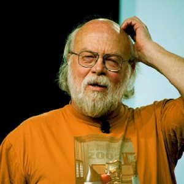

Python
Создан в 1989–1991 годах голландским программистом Гвидо ван Россумом

C
Разработан в 1969-1973 годах сотрудником Bell Labs Деннисом Ритчи

Javascript
Разработан в 1996 году, автор — американский программист Брендан Айк
Java
разработан в 1990–1996 годах канадским программистом Джеймсом Гослингом

Prolog
разработан в 1972 году, автор — французский программист Ален Колмеро.
Ruby
разработан в 1993-1995 годах, автор — японский программист Юкихиро Мацумото